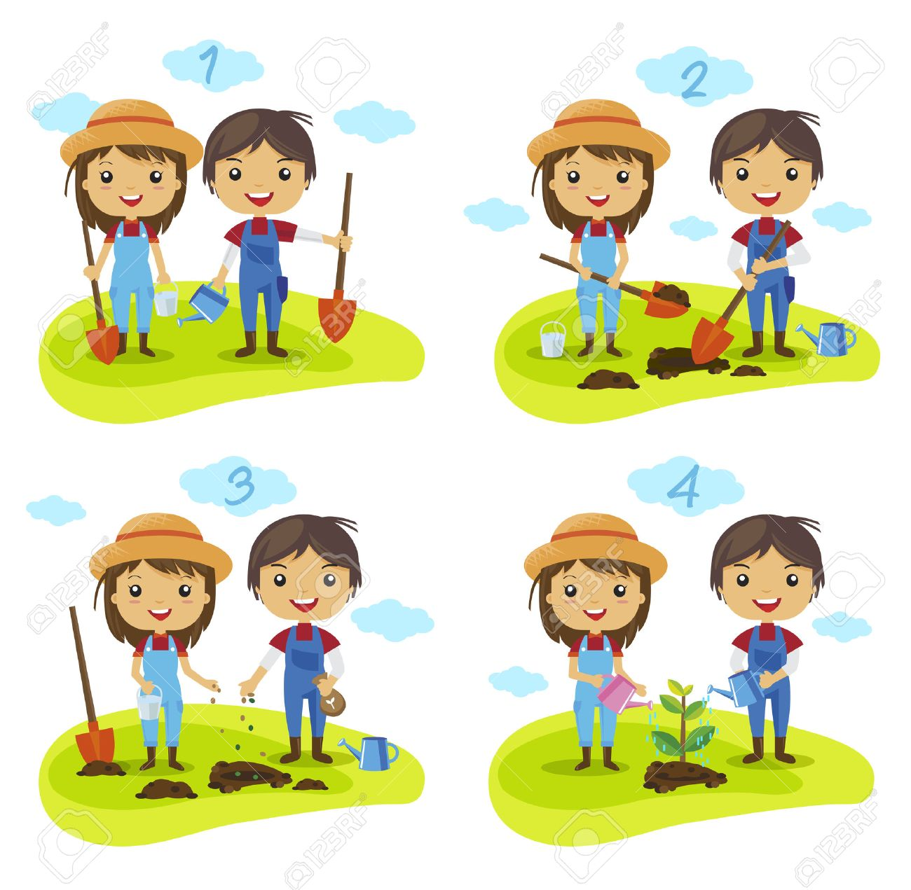
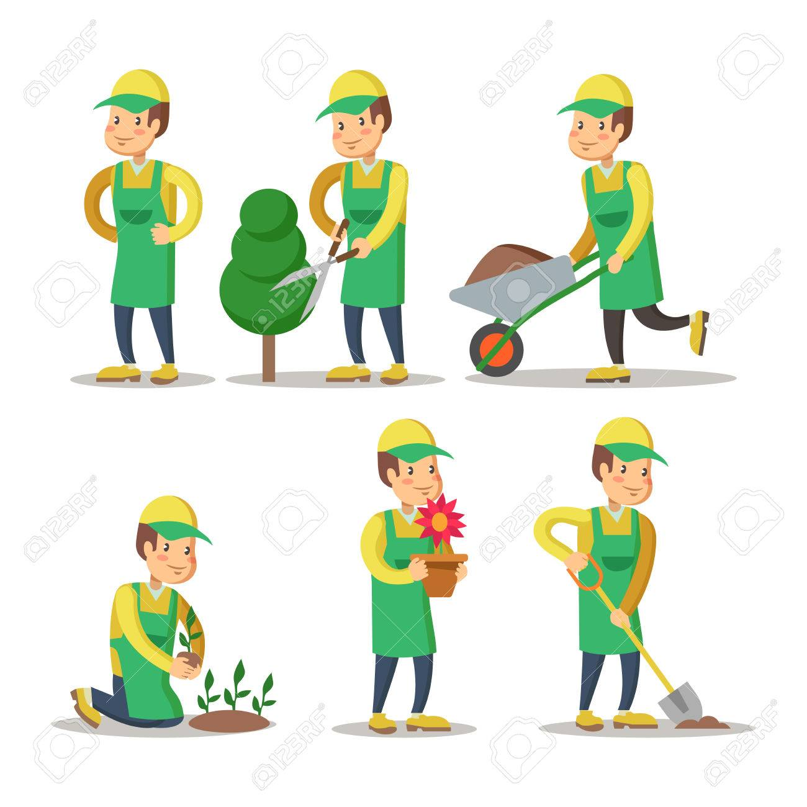
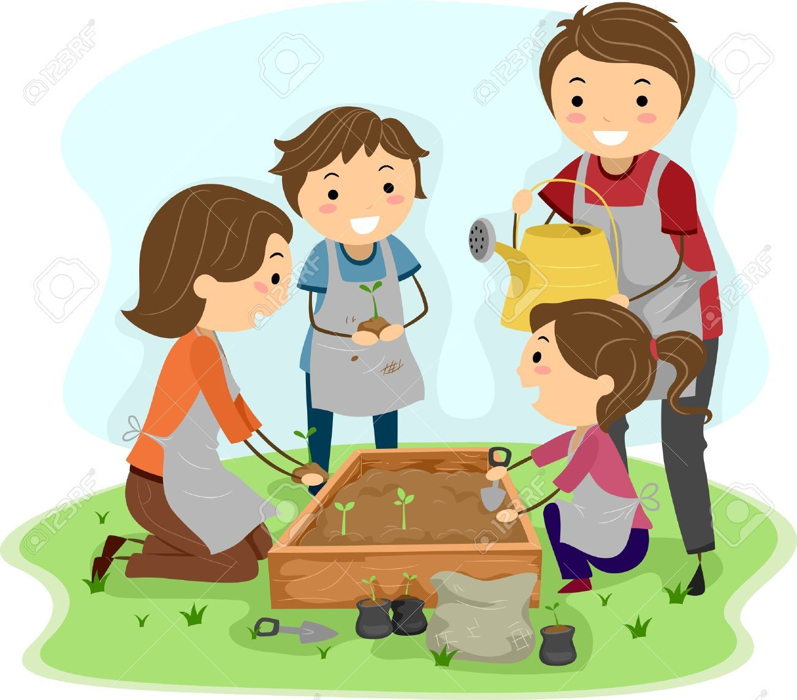
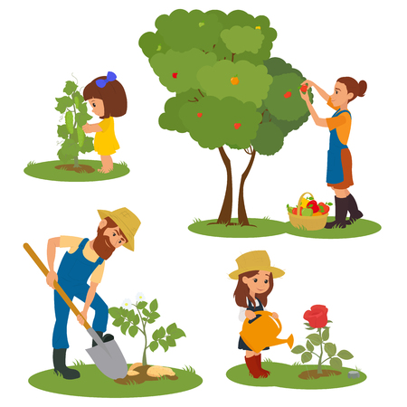

Para empezar con la creación de un huerto, hay que delimitar unas cuantas cosas para verificar que podemos hacerlo, con unos simples pasos podremos estar a nada de
crear nuestro huerto urbano.
Lugar de plantación
Primero hay que elegir el lugar. Lo ideal para el lugar es que esté ventilado y le dé la luz del sol. No necesitas complicarte mucho,
con un lugar como una ventana o un balcón será más que suficiente. Puede variar dependiendo de que vayas a plantar pero para empezar es ideal.

Espacio de plantación
Puedes elegir el recipiente que quieres que contenga tus plantas, puede ser desde una maceta hasta un cajón o una botella de plástico. Lo ideal
es que no gastes de más, si puedes darle un segundo uso a algo que tengas en casa sería lo mejor, la vida crece hasta en los lugares más impensables
siempre y cuando se cumplan las condiciones necesarias. Recuerda que al recipiente que elijas le debes perforar unos huecos en la parte baja para
permitir el drenaje de agua.

Composta
Antes de poder plantar, necesitamos la composta. Probablemente es el paso más tedioso pues se tiene que preparar con tiempo para que funcione bien.
Pero si estás dispuesto, te puede ayudar mucho hacer uno. Afortunadamente solo se usa pocas veces, la primera vez para que la germinación de la tierra
sea buena, después de eso probablemente se tendría que volver a utilizar dentro de 6 meses, si es necesario antes pero no es tan regular su uso.
Pero para resumir, tienes que llenar un recipiente de desechos orgánicos (cosas verdes como desechos de frutas/verduras) también pueden servir
bastantes productos "cafés" que son cosas como pedazos de madera, cartón, papel o hojas muertas. Con todo esto, controlando la temperatura la composta
estará lista en unas semanas. Aunque también te puedes ahorrar este paso comprando composta, pero sería más ecológico y barato hacerla tú mismo.
Si te interesa más sobre el tema pulsa aquí.
Plantación
Una vez decides que hacer sobre la composta, lo único que queda es poner composta y tierra en tu recipiente, elegir la planta que vas a sembrar y hacerlo,
la gran mayoría de semillas se plantan dos o tres veces su diámetro en la tierra.

Cuidado del huerto
Para el cuidado del huerto solo tienes que estar al pendiente, regarlo en las noches para que el agua no se evapore con el sol, aunque también
depende de la planta. Estar revisando constantemente de que las malezas no se apoderen del cultivo y trasplantar en caso de que la planta que se elija lo necesite.

Cosas a tener en cuenta
Puede que no tengas problemas y sería lo ideal, pero si llega a tener un problema sobre plagas o bichos que no solo se interpongan en el crecimiento
de su planta, si no que comprometa sus cultivos, puede recurrir a bioplaguicidas que son de mucha utilidad, si no puede o quiere hacerlos puede recurrir a
comprarlos, pero hay que tener cuidado con su manejo pues suelen ser nocivos inclusive, para la vida humana.